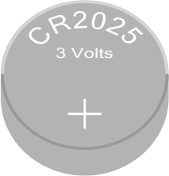
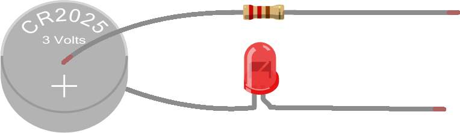
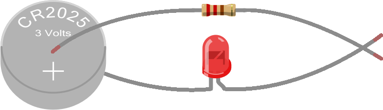

Before we get started, notice that we've added some information in a blue header at the top of this project. This header includes some important information that you will likely want to review before continuing on, including:
Project Name & Description: This is a brief overview of the project you're about to start.
Hardware Required: This will tell you which cells (or other hardware) are going to be used in the project.
New Concepts Required: These are the tutorials we suggest you read before getting started on the project. These tutorials will provide background information that will make the project much easier to understand and complete.
From here on, we'll include this type of header in every project so that you'll know what to expect -- and what is needed -- for the upcoming project. In some cases, the header will also indicate what your hardware setup should look like coming into the project -- this is especially true when a project is a continuation of a previous project.
Electronics is the study and building of circuits that rely on various types of components, including wires, computer chips and other common electrical devices. Through the study of programming and electronics, you can learn where these two areas collide, often referred to as "embedded systems" or "consumer devices." By combining programming and electronics, we can design and build games, tools and devices that can solve real world problems, as well as provide entertainment and ultimately make life easier and more convenient.
Now that you've (hopefully) spent some time reading our INTRODUCTION TO ELECTRONICS, let’s jump into a real-life example of building a circuit.
We’ve provided all parts you will need to build this circuit as part of the RaspberrySTEM CREATOR Kit, in the bag marked Your First Circuit RaspberrySTEM Cell. You'll find this bag (along with all the other project parts you'll need later) in the box marked OPEN LATER -- Project Parts. Open the box/bag and follow along!
The purpose of this circuit is to power and illuminate a “light emitting diode" (or “LED” for short). An LED a light source that looks and works a bit like a lightbulb (in that they both light up when you run electric current through them), so this circuit will work nearly identically to the circuit discussed in INTRODUCTION TO ELECTRONICS with the battery and the lightbulb.
To build this circuit, you’ll need the following three components (all provided in the bag marked Your First Circuit RaspberrySTEM Cell):
|  | BATTERY |
| LED | |
| RESISTOR |
By the way, remember how we mentioned in INTRODUCTION TO ELECTRONICS that sometimes we want to provide extra resistance to a circuit to get it to work? Notice that we have included a resistor in this circuit – its job is to reduce the amount of electric current flowing through the circuit so that the LED doesn’t break.
Okay, let’s give this a try, step by step…
Using your fingers, pinch one lead of the resistor (the "leads" are the metal wires on either side) to the positive (+) side of the battery and pinch the shorter lead of the LED (one of the leads is longer than the other) to the other side of the battery (we refer to this as the "negative" side).
Like this:

An important concept to understand about LEDs is that they are "unidirectional" -- in other words, they only allow electric current to flow in one direction. If you hook up the LED backwards -- in the way that electric current won't be allowed to flow through it -- it will not illuminate and the rest of the circuit will stop working as well (remember, if electric current isn't flowing at any point in the circuit, it's not going to be flowing anywhere in the circuit).
There are three ways to determine the correct way to orient the LED:
Look at the leads (the metal legs on either side of the LED). One is going to be a bit longer than the other. For the LED to work correctly, the longer lead should be closest to the power source and the shorter lead should be closest to ground.
There is a raised ridge that runs around the base of the LED bulb. That ridge is flattened on one side of the bulb. The side of the bulb where the ridge is flattened should be facing closer to the ground than to power in the circuit.
Just hook it up one way and hope you get lucky! If that doesn't work, reverse it. Keep in mind that if there are other issues with your circuit, it's possible that the LED won't illuminate in either case, and you still won't know if the LED is oriented correctly. If that happens, we suggest reverting back to #1 or #2 to ensure the LED is oriented correctly so you can rule that out as a possible problem in your circuit.
Using your free hand, touch the other leads of the resistor and LED together, as indicated below:
At this point, the LED should be lit, like this:

Congratulations...you just built your first electric circuit!
You'll notice that if you remove the resistor from the circuit above and attach the LED directly to the battery, the LED still lights. Which means you're probably wondering why we need the resistor at all?
Often, electronic components can only handle certain maximum voltages and/or currents. In general, the manufacturer of the component does a bunch of testing to determine how much voltage and/or current the part can handle before it's at risk of being damaged or working improperly. When a power supply puts out more voltage/current than the part can handle, a resistor in the circuit can reduce the voltage/current to ensure the part isn't damaged and works properly.
Sometimes your circuit won't work and you just can't figure out what the problem is. When this happens, it's a good idea to verify that wires and components aren't touching each other in places where you don't intend them to ("a short circuit"). Electric current flowing through a circuit is going to look for the easiest way to get to the lowest point of voltage (usually ground), and sometimes -- if wires or components are touching where you don't expect them to -- you may be inadvertently creating a new path for electric current to flow and that electric current may be traveling in ways that bypass your components and give you unexpected results.